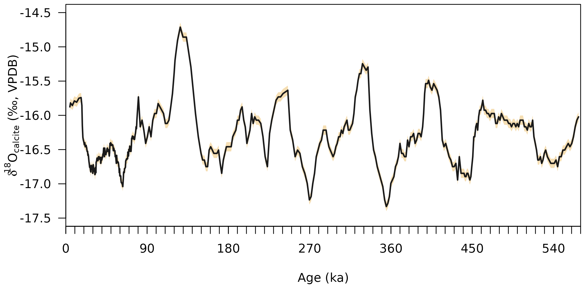
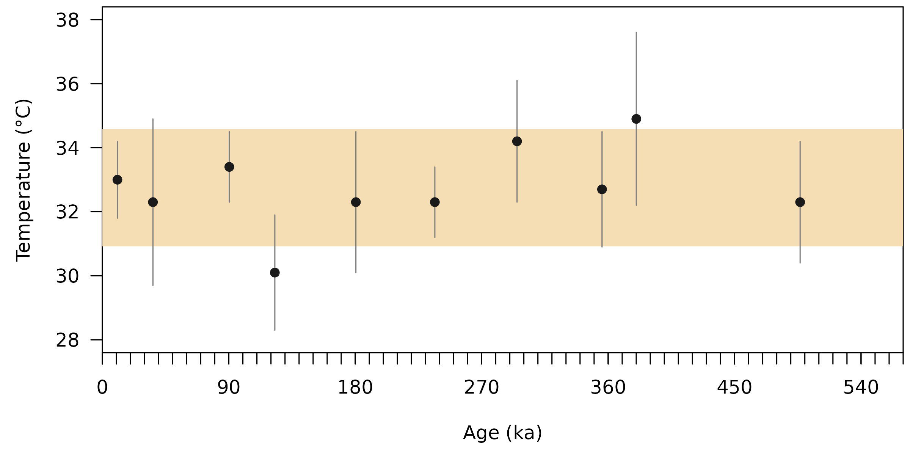

This vignette demonstrates the usage of isogeochem using a case study based on Bajnai et al. (2021).
Winograd et al. (2006) acquired a δ18O time series from carbonates that precipitated underwater in the Devils Hole caves spanning the last ca. 570 thousand years. Now, we are interested in the variations in the δ18O value of the groundwater in this period. To reconstruct a groundwater δ18O time series from the carbonate δ18O values, we have to know the temperature of the groundwater. Therefore, we measured the clumped isotope values of ten calcite samples. First, we convert the measured ∆47 values to carbonate growth temperatures. Then, using the mean of the clumped isotope temperatures, we convert the carbonate δ18O time series to a groundwater δ18O time series.
First, download and install isogeochem (you have to only do this once):
if (!require("devtools")) install.packages("devtools")
devtools::install_github("davidbajnai/isogeochem")
#>
checking for file ‘/tmp/RtmpAULnfq/remotes30c7730f4e98/davidbajnai-isogeochem-6e6026f/DESCRIPTION’ ...
✔ checking for file ‘/tmp/RtmpAULnfq/remotes30c7730f4e98/davidbajnai-isogeochem-6e6026f/DESCRIPTION’
#>
─ preparing ‘isogeochem’:
#>
checking DESCRIPTION meta-information ...
✔ checking DESCRIPTION meta-information
#>
─ installing the package to process help pages
#>
─ saving partial Rd database (2.1s)
#>
─ checking for LF line-endings in source and make files and shell scripts
#>
─ checking for empty or unneeded directories
#>
─ building ‘isogeochem_1.0.8.2.tar.gz’
#>
#> To use isogeochem, load the package to the current R session (you have to do this every time you close and re-open R):
Data can be loaded into R in many ways. For example, to load data from an excel file you could use the openxlsx package. For this vignette, however, lets specify the measured ∆47 values manually:
# D47(CDES90) values of Devils Hole carbonates
DH_D47 = c(0.573, 0.575, 0.572, 0.581, 0.575, 0.575, 0.570, 0.574, 0.568, 0.575)
DH_D47_err = c(0.003, 0.007, 0.003, 0.005, 0.006, 0.003, 0.005, 0.005, 0.007, 0.005)
DH_D47_age = c(10.70, 36.00, 90.35, 122.75, 180.45, 236.65, 295.15, 355.65, 380.05, 496.65)There are datasets available in isogeochem, which can be used simply by typing their name. For example, the devilshole dataset includes the original δ18O composite time series from the Devils Hole caves.
DH_age = devilshole$age
DH_d18O_VSMOW = devilshole$d18O_VSMOW
DH_d18O_err = devilshole$d18O_errorLets visualize the carbonate δ18O VPDB time series:
# Convert d18O VSMOW values to the VPDB scale
DH_d18O_VPDB = to_VPDB(DH_d18O_VSMOW)
# Calculate the errors
DH_d18O_VPDB_err1 = to_VPDB(DH_d18O_VSMOW + DH_d18O_err)
DH_d18O_VPDB_err2 = to_VPDB(DH_d18O_VSMOW - DH_d18O_err)
# Plot the results
plot(0, type = "l" , las = 1, xaxs = "i", xaxt = "n",
ylim = c(-17.5, -14.5),
xlim = c(0, 570),
ylab = expression(delta ^ 18 * "O"[calcite] * " (‰, VPDB)"),
xlab = "Age (ka)")
# Set up the x axis with ticks and labels
axis(1, at = seq(0, 570, by = 90))
axis(1, at = seq(0, 570, by = 10), labels=NA)
# Add the error interval the plot
polygon(c(DH_age, rev(DH_age)), c(DH_d18O_VPDB_err1, rev(DH_d18O_VPDB_err2)),
col="wheat", border = NA)
# Add the carbonate d18O VPDB time series to the plot
lines(DH_age, DH_d18O_VPDB, lwd=2, col="gray10")
# Convert D47 values into temperatures using the equation in Fiebig et al. (2021)
DH_temp = temp_D47(DH_D47, DH_D47_err, eq = "Fiebig21")
DH_temp_mean = mean(DH_temp$temp)
DH_temp_mean
#> [1] 32.75
DH_temp_err = mean(DH_temp$temp_err)
DH_temp_err
#> [1] 1.83
# Plot the results
plot(0, type = "l", las = 1, xaxt = "n", xaxs = "i",
ylim = c(28, 38),
xlim = c(0, 570),
ylab = "Temperature (°C)",
xlab = "Age (ka)")
# Set up the x axis with ticks and labels
axis(1, at = seq(0, 570, by = 90))
axis(1, at = seq(0, 570, by = 10), labels = NA)
# Add mean error range
rect(0, DH_temp_mean - DH_temp_err,
570, DH_temp_mean + DH_temp_err,
col = "wheat", border = NA)
# Add error bars
segments(DH_D47_age, DH_temp$temp - DH_temp$temp_err,
DH_D47_age, DH_temp$temp + DH_temp$temp_err, col = "gray50")
# Add points
points(DH_D47_age, DH_temp$temp, col = "gray10", pch = 19)
The calculated clumped isotope temperatures for the samples are statistically indistinguishable, which allows us to calculate a mean groundwater temperature and use that to reconstruct the variations in groundwater δ18O.
# Calculate groundwater d18O values and its error
DH_d18O_gw = d18O_H2O(
temp = DH_temp_mean,
d18O_c_VSMOW = DH_d18O_VSMOW,
min = "calcite",
eq = "Coplen07")
DH_d18O_gw_err_low = d18O_H2O(
temp = DH_temp_mean + DH_temp_err,
d18O_c_VSMOW = DH_d18O_VSMOW - DH_d18O_err,
min = "calcite",
eq = "Coplen07")
DH_d18O_gw_err_high = d18O_H2O(
DH_temp_mean - DH_temp_err,
DH_d18O_VSMOW + DH_d18O_err,
min = "calcite",
eq = "Coplen07")
# Plot the results
plot(0, type = "l", las = 1, xaxt = "n", xaxs = "i",
ylim = c(-16, -12),
xlim = c(0, 570),
ylab = expression(delta ^ 18 * "O"[groundwater] * " (‰, VSMOW)"),
xlab = "Age (ka)")
# Set up the x axis with ticks and labels
axis(1, at = seq(0, 570, by = 90))
axis(1, at = seq(0, 570, by = 10), labels = NA)
# Add the error interval the plot
polygon(c(DH_age, rev(DH_age)), c(DH_d18O_gw_err_low, rev(DH_d18O_gw_err_high)),
col = "wheat", border = NA)
# Add the carbonate d18O time series to the plot
lines(DH_age, DH_d18O_gw, lwd = 2, col = "gray10")